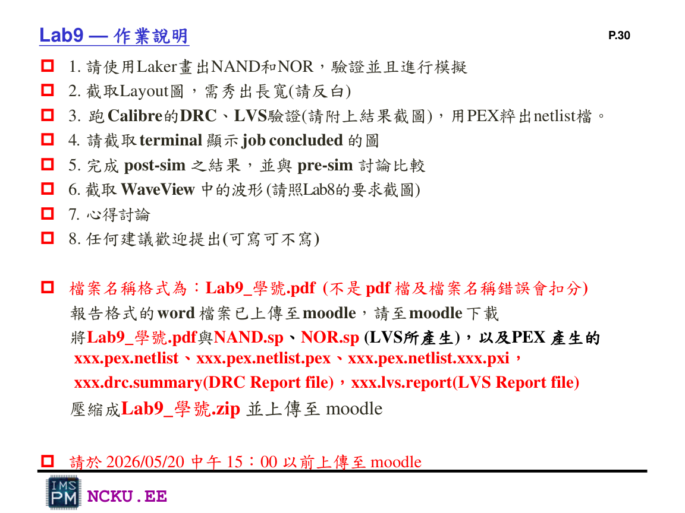
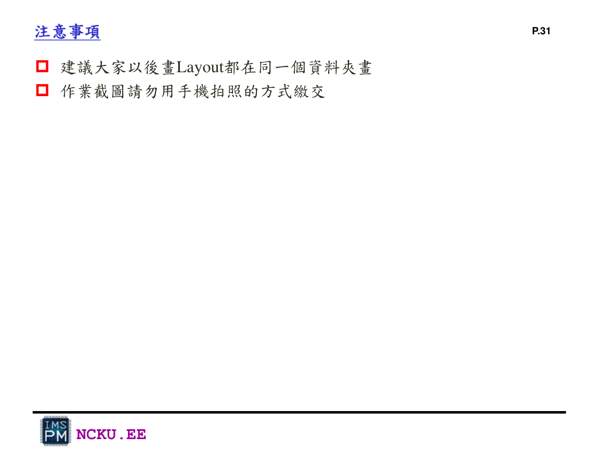
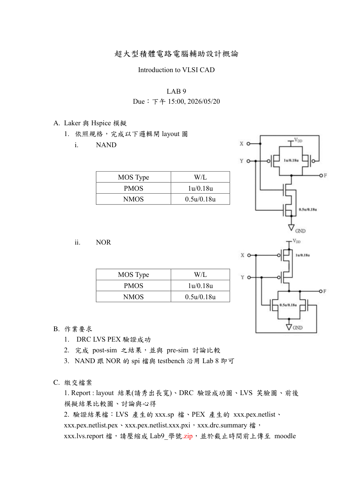

報告格式、截圖與繳交 ZIP
Lab9 最後需要交 PDF 報告與驗證結果檔。報告圖請用電腦截圖，不能用手機拍照。
報告內容架構
A. NAND
Presim：terminal job concluded、WaveView 波形。Post-sim：terminal job concluded、WaveView 波形、DRC/LVS 結果、Layout 截圖。最後比較 presim/post-sim。
B. NOR
內容與 NAND 相同：presim、post-sim、DRC/LVS、layout、比較說明。
C. 心得討論
可寫這次學到 Laker layout、DRC/LVS/PEX 的關係，以及 post-sim 與 pre-sim 的差異。

Lab9_Laker p.30：Lab9 作業說明，需 Laker 畫 NAND/NOR、DRC/LVS、PEX、post-sim、WaveView、心得與 ZIP

Lab9_Laker p.31：注意事項，建議同一資料夾作業，截圖不可用手機拍照
格式檔要求

LAB9 Homework：完成 NAND/NOR layout、DRC LVS PEX、post-sim 與 pre-sim 比較，繳交結果檔
Lab9 報告格式頁內容
講義重點：Report 檔名 Lab9_學號.pdf，並將 PDF 與驗證檔壓縮成 Lab9_學號.zip
| 繳交項目 | 檔案 / 截圖內容 |
|---|---|
| Report PDF | Layout 結果需秀出長寬、DRC 驗證成功圖、LVS 笑臉圖、前後模擬結果比較圖、討論與心得 |
| LVS 檔案 | LVS 產生的 xxx.sp、xxx.lvs.report |
| PEX 檔案 | xxx.pex.netlist、xxx.pex.netlist.pex、xxx.pex.netlist.xxx.pxi |
| DRC 檔案 | xxx.drc.summary |
| 壓縮檔 | Lab9_學號.zip |
截圖清單
壓縮指令範例
cd Lab9_學號
zip -r Lab9_學號.zip Lab9_學號.pdf *.sp *.pex.netlist* *.drc.summary *.lvs.report